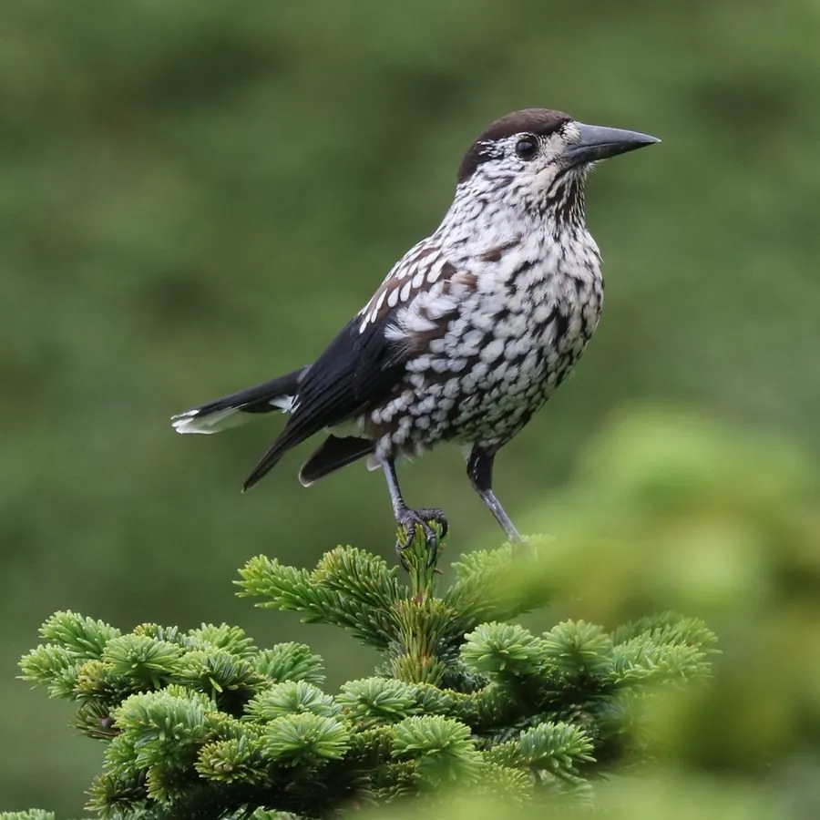

鸟类 · 动物界
星鸦 Nucifraga caryocatactes

巧克力褐色身体密布白色星点，头顶黑帽、尾下雪白，喙细长如针。秋天把成千上万粒松子埋入土中，是针叶林扩张的关键推手。
- 分类
- 门脊索动物门纲鸟纲目雀形目科鸦科属星鸦属
- 栖息环境
- 寒温带针叶林、针阔混交林与高山松林，依赖松树、云杉等结实乔木。
- 地理分布
- 欧亚大陆针叶林带，中国东北、华北、西北及西南高山林区有分布。
- 保护级别
- IUCN 红色名录列为无危（LC）；中国列入“三有”陆生野生动物名录。
物种志
星鸦体长约三十至三十六厘米，体重一百二十至二百克。通体深巧克力褐色，除头顶和尾下覆羽外，全身密布白色斑点，宛如撒了一层星屑；头顶至后颈黑色，形成明显的“黑帽”，尾下覆羽纯白，尾羽黑色而端部白色。喙细长而尖，适合从松果中撬出种子。虹膜深褐，脚黑色。雌雄羽色相似。
它栖息于寒温带针叶林、针阔混交林与高山松林，常单独或成对活动，性机警，多在树冠层取食松子、榛子、昆虫和浆果。秋季它会收集大量松子，埋在树根、倒木旁或土壤中，单只鸟一季可储藏上万粒种子，并依靠空间记忆在冬季取回。未取回的种子萌发，使它成为针叶林更新的重要传播者。繁殖期在针叶树上营巢，每窝产卵二至四枚。星鸦广泛分布于欧亚大陆针叶林带，中国东北、华北、西南高山林区可见，列入“三有”名录。
形态与习性
- 体长30–36 厘米
- 体重120–200 克
- 食性松子、榛子等坚果，兼食昆虫与浆果
- 繁殖针叶树上营巢，每窝 2–4 枚
- 储食单季可埋藏上万粒松子
- 保护级别IUCN 无危；“三有”动物
趣味知识
- 全身白点像夜空繁星，故名星鸦。
- 一只鸟秋季可埋藏上万粒松子，冬季靠记忆挖回。
- 漏挖的松子发芽，使它在森林扩张中功不可没。